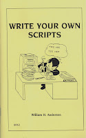

Write Your Own Scripts
3/14/2009
{kind=link}

By William Andersen
Why should anyone go to the trouble of writing routines for themselves? There are probably plenty of good reasons. Sometimes the kind of routine one wants is not avalable in books and there is no one who knows enough about the subject to write one. Maybe the ventriloquuist cannot find a routine that says what he wants to say. It could be that a person does not want to, or cannot afford to pay someone else to write routines for him. There are also some of us who enjoy composing ventriloquist routines.
In my book, Write Your Own Scripts, we will explain several techniques you can use to write your own routines. We will also discuss what is funny because a good ventriloquist is expected to be funny. Finally we will put together a script which you can use in your performance.
Techniques explained will include:
Rewriting a routine, Talk a routine, Story routines, and Writing it out, plus seven was you can Learn to be funny!
* * * * * *
Note from Clinton: Write Your Own Scripts is one of more than two dozen books I have listed now for eBay auctions ending Monday morning. See them all Here.
Why should anyone go to the trouble of writing routines for themselves? There are probably plenty of good reasons. Sometimes the kind of routine one wants is not avalable in books and there is no one who knows enough about the subject to write one. Maybe the ventriloquuist cannot find a routine that says what he wants to say. It could be that a person does not want to, or cannot afford to pay someone else to write routines for him. There are also some of us who enjoy composing ventriloquist routines.
In my book, Write Your Own Scripts, we will explain several techniques you can use to write your own routines. We will also discuss what is funny because a good ventriloquist is expected to be funny. Finally we will put together a script which you can use in your performance.
Techniques explained will include:
Rewriting a routine, Talk a routine, Story routines, and Writing it out, plus seven was you can Learn to be funny!
* * * * * *
Note from Clinton: Write Your Own Scripts is one of more than two dozen books I have listed now for eBay auctions ending Monday morning. See them all Here.